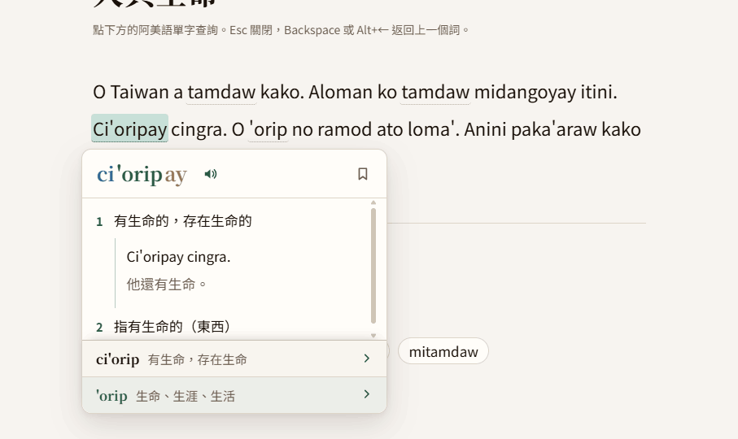
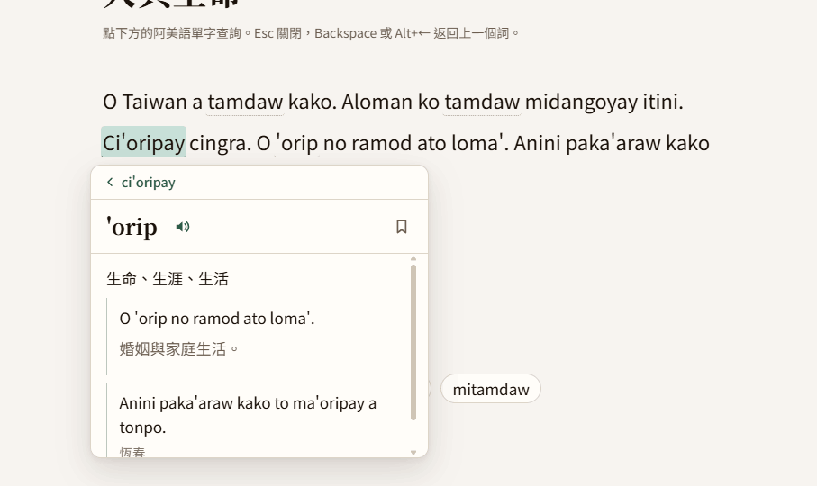
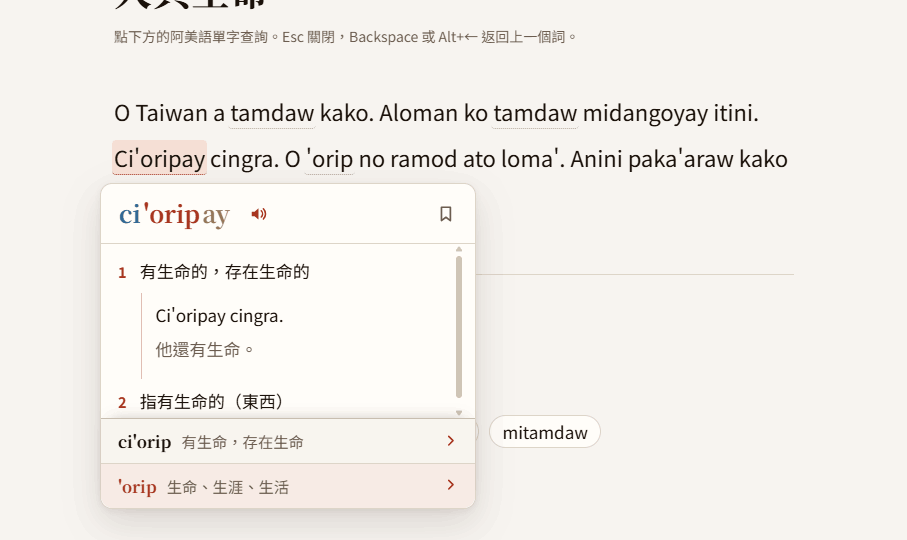
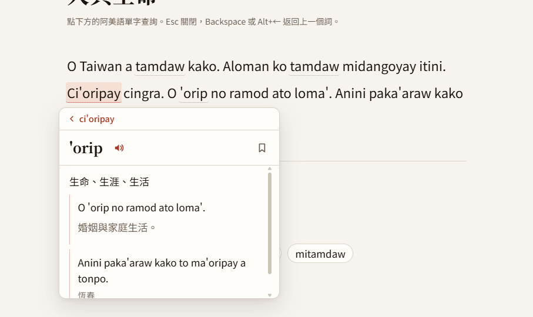
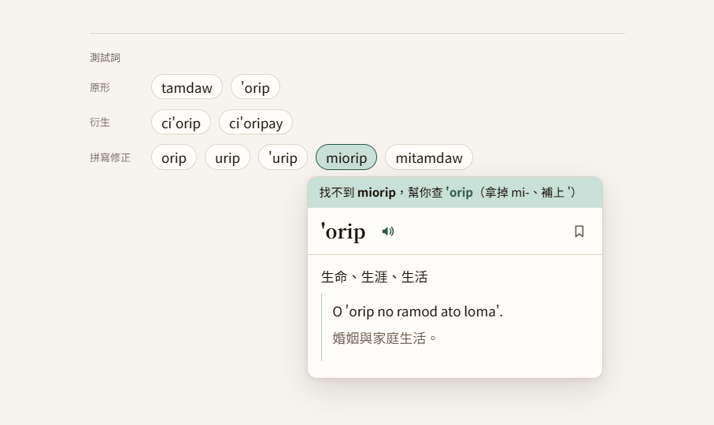
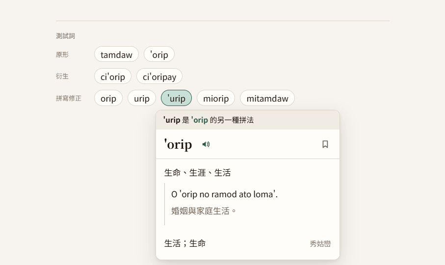

Amis browser extension
Look up Amis while reading a webpage, explore meanings and examples, and keep useful material for later.
Existing learner experience
- Hover or select an Amis word or sentence on a webpage to look it up.
- Root and affix information displayed automatically.
- Compare definitions and examples across seven sources.
- Explore a sentence in the side panel.
- Listen to source audio, copy sentences, save words or examples for review.






Proposed first release
A free, Amis-only Chrome desktop extension built around lookup → examples/listening → sentence reading → saved review.
After reworking the side panel, menus UI, onboarding, and final identity, the extension will be ready for testing and store update (already submitted).
The tool will be linked for sending feedback to 語浪. Feedback can be used to shape subsequent releases.
Mobile reach matters for your audience, so a quick mobile version route is worth testing. A desktop app would also enable looking up words in other apps (e.g. Line).
Relationship to 語浪 & revenue
The working version already uses 語浪’s attribution and visual assets. It currently has a temporary name, Tapelik, so we’d choose its public name before publishing. We can also decide whether it carries 語浪’s brand, a shared identity, or an independent name.
Saving material directly to the user's 語浪 account would be a great addition.
Potential paid feature: integrate 語浪's AI for translation and grammar help. Dictionary content is licensed for non-commercial use, so the paid boundary needs review before launch.
Choices to discuss
The public name, first-release features, quiet pilot versus broader launch, and which links to the 語浪 website would be useful.